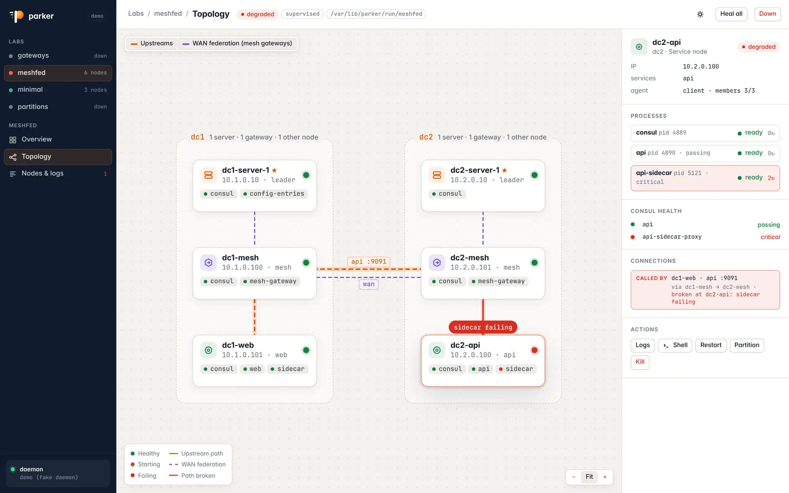
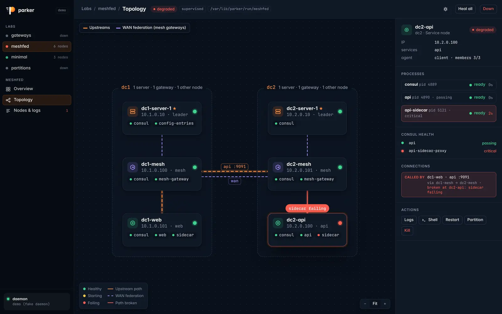
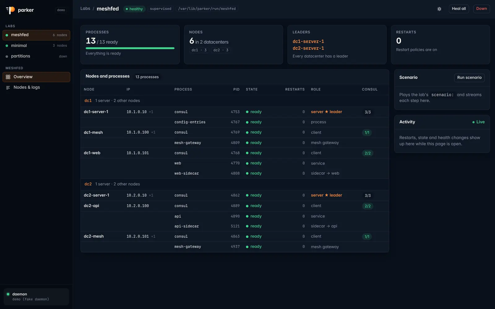
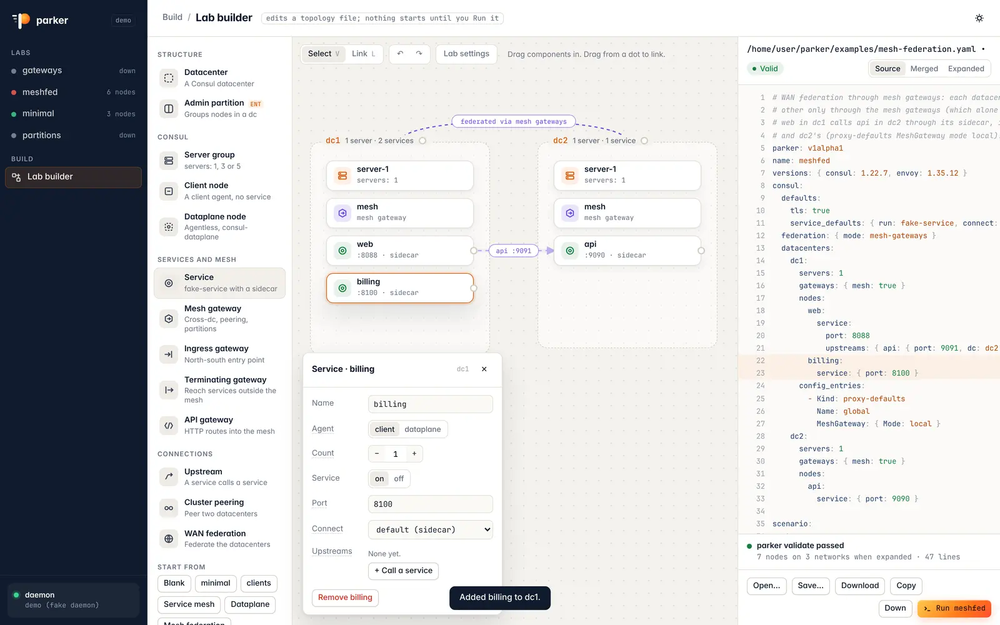
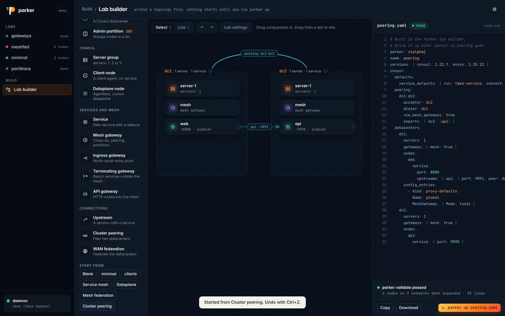

Consul labs at probe speed.
Describe a Consul setup in a few lines of YAML. Parker has it running in seconds, real agents and all, so reproducing an issue takes less time than describing it.
$
How it feels
Write what you want. Parker builds it.
Say how many servers, which services, and how they talk. Parker picks the addresses, writes the Consul configs, starts everything in the right order and tells you when it is ready.
parker: v1alpha1 name: mesh versions: { consul: 1.22.7, envoy: 1.35.12 } consul: datacenters: dc1: servers: 3 service_defaults: { run: fake-service, connect: sidecar } nodes: web: service: { port: 8080, upstreams: { api: 9091 } } api: service: { port: 9090 }
$ parker up mesh.yaml ... lab "mesh" is up ✓ $ parker call mesh dc1/web web dc1-web · dc1 200 23ms └─ api dc1-api · dc1 200 4ms # 3 servers, 2 clients, 2 Envoy sidecars, # a demo app on each, wired through the mesh.
What you get
Everything a repro needs, nothing it doesn't.
Parker runs the real Consul and Envoy binaries, so what you see is what your users see. Everything else is there to get you to the interesting part faster.
Fast, and light
Each node is a Linux network namespace, not a container or VM. Dozens of agents fit on a laptop, and a fresh lab is up before your coffee cools.
The whole Consul map
Service mesh with sidecars, mesh, ingress, terminating and API gateways, WAN federation, cluster peering, ACLs, TLS, dataplanes, and Enterprise partitions.
Break it on purpose
Partition the leader, kill a server, freeze a process, then heal it. One command, or one key in the terminal UI, with no iptables wizardry.
Scenarios that check themselves
Write the steps of a bug report as a scenario: wait, run, break, assert. parker run plays it and tells you exactly which step failed.
Rolling upgrades
Upgrade one node at a time, servers first and the leader last, waiting for the cluster to settle in between. Mixed versions are one line of YAML.
From your laptop
Run labs on a Linux VM and drive them from your Mac with the same commands. No root needed either: rootless mode keeps labs in your own sandbox.
Tour
See your lab, three ways.
A live terminal dashboard, a web UI with a topology map, and a lab builder you can drag things into. Pick whichever fits the moment.


Every node and process, live. Grouped by datacenter, with who leads and what's healthy. Open a shell, tail logs, or kill, pause and partition a node with a single key.
$ parker tui

The architecture, drawn for you. Datacenters, gateways and which service calls which. When something fails, the paths through it turn red and say why. Click a node to open its Consul UI or app.
$ parker ui
Health at a glance. Ready counts, leaders, restarts and Consul health for every node, plus logs, scenarios and fault buttons. Works the same against a lab on a remote VM.
$ parker ui

Draw it instead. Drag in datacenters, services and gateways, link what calls what, and watch the YAML write itself. Open an existing file, edit on the canvas, and hit Run.
$ parker ui → BuildGet started
Three commands to your first cluster.
Parker runs on any Linux machine or VM, amd64 or arm64. On a Mac, run it in a Linux VM and drive it from your terminal.
Install
One script, one binary. No Docker, no Kubernetes.
$ curl -fsSL \
https://ranjandas.github.io/parker/install.sh \
| shDescribe
Write a starter file, or use one of the examples.
$ parker init lab.yaml # 3 Consul servers in dc1
Launch
Bring it up, look around, tear it down.
$ parker up lab.yaml $ parker tui $ parker down lab.yaml
Examples
Start from a lab that already works.
Each example is a single file you can run as is, then bend into the shape of your problem.
Minimal
Three servers, one datacenter. The fastest way to a leader.
$ parker up examples/minimal.yamlService mesh
Two services talking through Envoy sidecars, and an intention that cuts them off.
$ parker run examples/mesh.yamlCross-datacenter failover
web → api → db in two datacenters. Fail api in dc1 and watch requests move to dc2.
$ parker run examples/fake-chain.yamlFederation through gateways
Two datacenters that reach each other only through their mesh gateways.
$ parker up examples/mesh-federation.yamlCluster peering
One datacenter exports a service to another. Parker sets up the peering and waits until it's active.
$ parker up examples/peering.yamlIngress, terminating, API
Every kind of gateway in one lab, with routes you can curl.
$ parker up examples/gateways.yamlFaults
Cut off the leader, kill it, freeze it, and check the cluster recovers each time.
$ parker run examples/faults.yamlRolling upgrade
Move a live cluster to a new Consul version, one node at a time.
$ parker run examples/upgrade.yamlAdmin partitions
Teams in their own partitions and namespaces, with failover between them.
$ parker up examples/partitions.yamlMore in the examples folder: ACLs, TLS, transparent proxy, dataplanes, config entries, templates and overlays.
Why Parker
Named after the fastest thing we've ever built.
NASA's Parker Solar Probe dives through the Sun's corona at nearly 700,000 km/h, faster than any object humans have made. That's the bar: a lab should go from idea to running cluster before the question has gone cold.
The logo is a P whose bowl is the Sun, with the probe's speed lines trailing behind.
Your next repro is seconds away.
Install one binary, write a few lines of YAML, and get back to the actual problem.